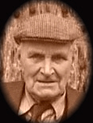
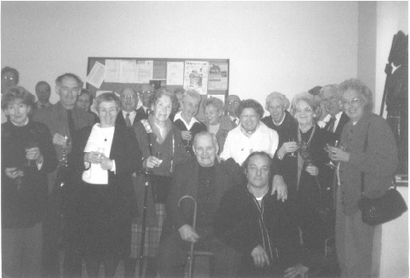
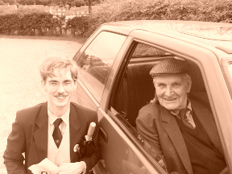
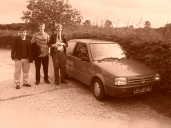
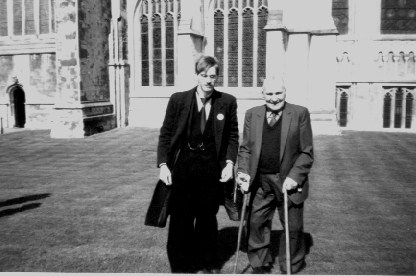

Mr. Sid Russell
The Verger of St. Nicholas, Leeds

Leeds village in postcards dating from around the time of Mr Russell's youth.

Mr Russell's parents

Mr Russell was posted to the Middle East during World War II


The Russell Family


Mr Sid Russell & Miss Vi Ledger married on Christmas Day 1940

Party at Leeds Memorial Hall for the Queens Coronation 1953 - Mr Russell is on the extreme right at the front.

Village gathering near 'The George Inn' 1950's

Mr Russell starring in a performance by the Leeds Amateur Dramatic Society in the 1950's

With the footaball team, 1949 outside 'The Ten Bells' Inn, in Leeds.

With the cricket team on the Cricket field 1940's - Mr Russell fourth from left; Mrs Russell second from left. In the centre in darker jacket is Mr John Butcher - Headmaster of Leeds Primary School for many years, and chorister at the church for over 60 years,
Mr Russell helped to refound the football and cricket teams after WWII.


Some of Mr Russell's relatives marrying at Leeds Church in the 1950's. Mr Russell's mother is in black fourth from the right in the bottom picture and in a wheelchair in the pictures above that.
Leeds Church is very fortunate that it can still boast a Verger. Mr Sid Russell has been Verger at Leeds Church since May 17th 1933. Mr Russell has served the Parish in this duty exceedingly faithfully, and is quite simply an absolute legend! The Leeds Youths celebrated his 70 years as verger in 2003 in fine style, with a Barbeque on Saturday 17th May, and the Vicar arranged wine post-service on the Sunday morning.

18th May 2003 at Leeds Church celebrating Mr Russell's 70 years as Verger.
A peal was also rung in August 2003 to celebrate this splendid milestone and to mark the retirement of the Vicar, though the peal board was subsequently dumped outside the Master's house.
The dumped pealboard - this picture was taken when it was blessed in the Church at a benefice service by Rev Robin Gill
We were honoured when Mr Russell agreed to be interviewed and thus gave us an insight to the workings of Leeds Church when he began his office as Verger in 1933. When he was appointed, his salary was £10 a week and 30/- for each grave dug! (the job in those days also comprised Sexton). He originally only took the job on “for a couple of weeks”!
There were three services every Sunday:
Holy Communion at 8am (Bells not rung for the early service) An average of
20 present at the service.
Mattins at 11am (10 Bells rung from 10am to 11am) An average of 50 present
at the service.
Evensong at 6:30 pm (10 Bells rung from 6pm to 6:30pm) An average of 30
present at the service.
At Festivals (i.e. Easter, Christmas, Harvest etc) all the seats in the
Church would be filled at the main Service, and there would be people
standing in the aisles, and out of the door!
Mr Russell was taught to ring the bells by his Father, and became a steady call-change ringer and sometime tower captain. He also taught a number of his family and others to ring so that there were enough to ring 10 bells every Sunday. If there were not enough ringers to man all 10 bells, then Mr Russell would chime the bells on the old Ellacombe (which the Society is planning to re-instate) in a random  way, or occasionally Mr George Lavender , the organist would chime Hymns on them (usually for Evensong). Mr Russell provided transport for Mr Lavender who lived in Harrietsham. The choirmaster was a Mr Butler. Ringing practices took place on Fridays at 7pm.
Old Custom: As soon as the death of a parishioner was confirmed, Mr Russell would go to the Church and toll bell number 7 the number of times which corresponded with the persons age. Stahlschmidt's book of Kent bells from 1886 gives a more detailed account of the local custom with regard to tolling for deaths etc, but presumably post 1930 this had become very much simpler, and of course died out entirely at some point (though the Society will attempt to re-instate it in some form in the future, subsequent to the re-installation of the Ellacombe mechanism)

2003 at Canterbury Cathedral; Master of the Leeds Youths with Mr Russell after Mr Russell's receipt of Maundy Money from H.M. Queen Elizabeth II

Mr Russell cuts his 90th birthday cake; February 2005
In 2005 a ploy by the hierarchy at Leeds to have Mr Russell removed as Verger from the Parish Magazine, and to claim that he was no longer Verger was wrongheadedly effected, though many of us are simply ignoring such a preposterous step. He has been Verger for longer than any of his detractors have been alive! This attitude is to be depracated in the strongest possible terms. Mr Russell will be Verger for as long as he lives, regardless of the assertions of the ignorant and disrespectful. The fact that he has supposedly been removed from his post because he no longer carries out the duties of Verger is foolish. Given the right encouragement and support he could still attend church, at least on occasions. He would do so if the Church still did the 8am Communion, 11am Matins & 6:30pm Evensong.
In February 2008, Mr Russell celebrated his 93rd birthday. He is now the same age as James Barham finally attained before his death in 1818. We are of course all hoping that Mr Russell will surpass this age, and indeed that he will attain his centenary. A Quarter Peal was attempted of Cambridge Suprise Minor on the back 6 at Leeds, and the striking was immaculate; sadly one of the band shifted course at the end of the penultimate course, and could not be righted, thus the Quarter Peal failed to 'run home true'.
Of course, we are all looking forward to marking Mr Russell's 75 years as Verger, and 75 years a member of the Royal British Legion in May 2008.